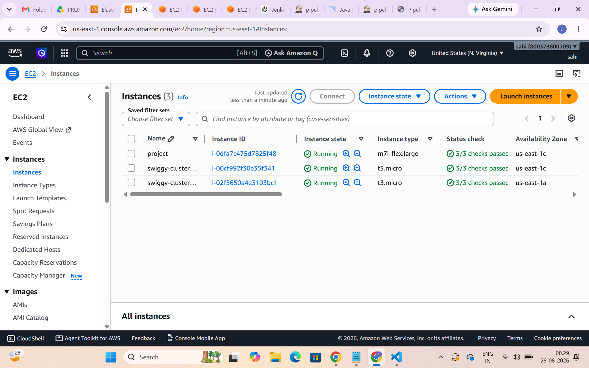
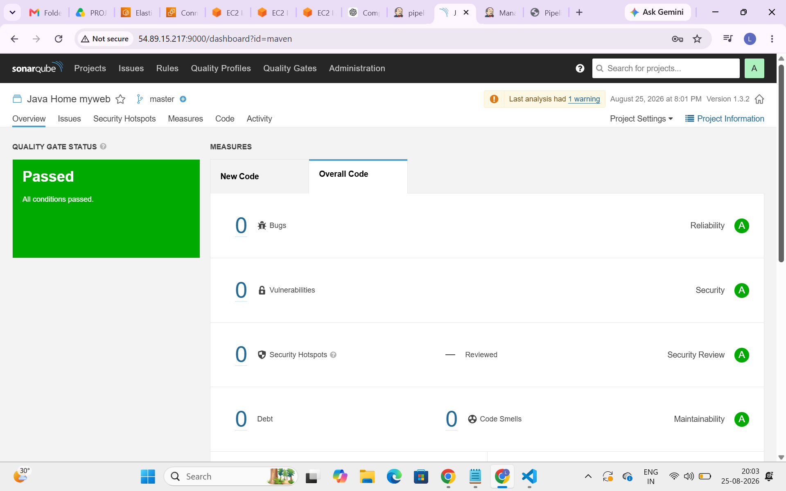
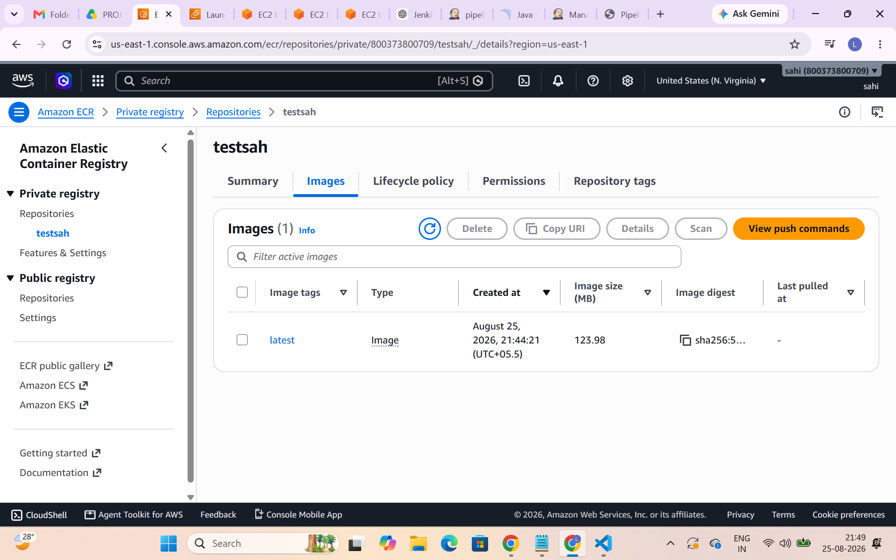

Projects
🚀 End-to-End Java CI/CD Pipeline on AWS EKS
Designed and implemented an end-to-end CI/CD pipeline for a Java Maven application. The pipeline automates code checkout, build, code quality analysis, Docker image creation, image storage, and deployment to Amazon EKS.
CI/CD Workflow:
Technologies: Java, Maven, GitHub, Jenkins, SonarQube, Docker, Amazon ECR, Amazon EKS, Kubernetes, Linux
Key Responsibilities:
- Created a Jenkins CI/CD pipeline for automated builds and deployments.
- Integrated SonarQube for code quality analysis.
- Created and built a Docker image for the application.
- Pushed the Docker image to Amazon ECR.
- Deployed the application to Amazon EKS using Kubernetes manifests.
- Verified application deployment using kubectl.
- Created a Jenkins CI/CD pipeline for automated builds and deployments.
- Integrated SonarQube for code quality analysis.
- Created and built a Docker image for the application.
- Pushed the Docker image to Amazon ECR.
- Deployed the application to Amazon EKS using Kubernetes manifests.
- Verified application deployment using kubectl.
Project Screenshots
Jenkins CI/CD Pipeline

Amazon EKS Nodes

SonarQube Analysis

Amazon ECR

CI/CD Workflow:
Technologies: Java, Maven, GitHub, Jenkins, SonarQube, Docker, Amazon ECR, Amazon EKS, Kubernetes, Linux
Key Responsibilities:
- Created a Jenkins CI/CD pipeline for automated builds and deployments.
- Integrated SonarQube for code quality analysis.
- Created and built a Docker image for the application.
- Pushed the Docker image to Amazon ECR.
- Deployed the application to Amazon EKS using Kubernetes manifests.
- Verified application deployment using kubectl.
Technologies: GitHub, Jenkins, Maven, SonarQube, Docker, Amazon ECR, Amazon EKS, Kubernetes
View Project →AWS Multi-Tier Architecture
Designed and deployed a multi-tier AWS architecture using public and private subnets, Internet Gateway, NAT Gateway and a bastion server.
Technologies: AWS EC2, VPC, Subnets, Internet Gateway, NAT Gateway, Bastion Host
Dockerized Web Application
Containerized a web application using Docker and deployed the application inside a Docker container.
Technologies: Docker, Dockerfile, Linux